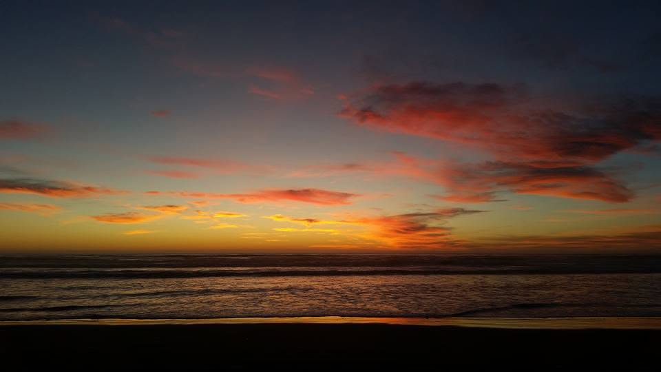

Live From the Beach
Weather & Wind at the Dunes
Measured at the sand, not in town. Wind is the ruler of the dunes: it builds the riding, sculpts the bowls, and sandblasts your camp when it feels like it. Know what it's doing before you go.
Right Now at Oceano Dunes
—
Loading current conditions…
Wind
—
Gusts
—
peak right now
Feels Like
—
wind chill counts out here
HEADS UP:
Temperature °F
Wind mph
Gusts mph
Next 48 hours at the dunes. Afternoons usually blow hardest from the west; mornings are the calm, glassy window riders love.
7-Day Outlook
Daily highs, lows, sky, and peak wind.
Reading the wind like a local
Under 10 mph is a dream day. 10 to 20 mph is normal afternoon west wind: fine riding, keep camp doors facing east. 20 to 30 mph starts moving serious sand; goggles required and camp gets miserable. Over 30 mph is sandblasting: paint-stripping, visibility-killing wind. Morning rides beat the wind almost every day of the year.
Data: Open-Meteo forecast for the beach at Oceano Dunes (35.089, -120.630), updated continuously. For official warnings see the National Weather Service forecast.